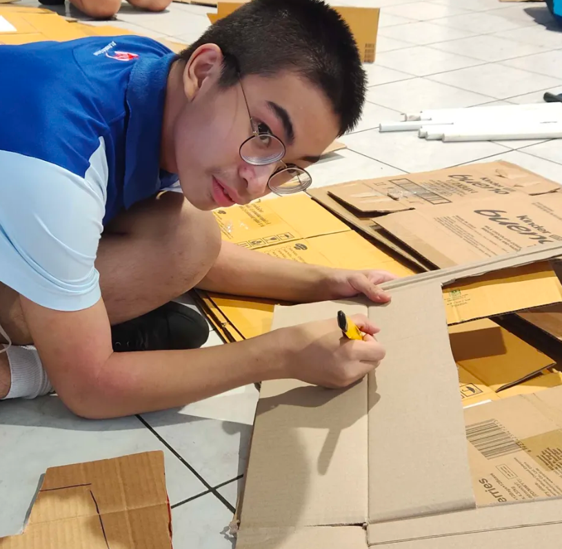

About Me
- ชื่อ-สกุล: Pattarakorn Sukasemnatee
- ชื่อเล่น: Preme
- รหัสนักศึกษา: 6909617810
- หลักสูตร: Computer Science (CS100691)
- ภูมิลำเนา: Bangkok
- ความสนใจ: Web Development

My Portfolio
การบ้านของรายวิชา
Title: CS100 Mini Exercise #2
Type: Course Assignment
Date: 27 Sep 2026
Role: Individual Developer
Description: แบบฝึกหัดย่อยในรายวิชา CS100 พัฒนาและฝึกฝนการใช้งานสร้างฟอร์มรับข้อมูล (HTML Forms) การจัดการสื่อ Media ต่างๆ เช่น การแทรกรูปภาพและวิดีโอลงบนหน้าเว็บ
Skills: HTML, HTML Forms, Media Elements (Image/Video)
Reflection:
- What I did: เขียนโค้ดแทรกแท็กฟอร์มรับข้อมูล และแทรกไฟล์สื่อประเภท Video/Image ลงในโครงสร้าง HTML
- What I learned: เข้าใจโครงสร้างการทำงานของฟอร์ม การกำหนด atributo ของ input และการจัดการองค์ประกอบ Media
- Challenge: การกำหนดขนาดและเล่นวิดีโอให้แสดงผลได้อย่างถูกต้องบนหน้าเว็บ โดยไม่ให้ขนาดไฟล์ล้นกรอบ
- Next step: นำทักษะการสร้างฟอร์มและจัดการสื่อ ไปประยุกต์ร่วมกับ Bootstrap เพื่อให้แสดงผลรองรับมือถือ (Responsive)
Evidence: Mini Exercise #2
ผลงานและประสบการณ์
Title: Sports Day
Type: Activity
Date: 9 Jul 2025
Role: Event Staff & Cheer Performer
Description: เข้าร่วมกิจกรรมกีฬาสีโรงเรียน โดยทำหน้าที่เป็นสต๊าฟช่วยดูแลความเรียบร้อยของงาน และร่วมเป็นนักแสดงสแตนด์เชียร์เพื่อสร้างความสนุกสนานและกำลังใจให้กับทีม
Skills: Teamwork, Communication, Time Management, Performance Skills, Problem Solving
Reflection:
- What I did: ฝึกซ้อมการแสดงเชียร์อย่างสม่ำเสมอ พร้อมทั้งทำหน้าที่สต๊าฟช่วยเตรียมอุปกรณ์และดูแลความเรียบร้อยภายในงาน
- What I learned: ได้เรียนรู้การบริหารเวลาในการทำหน้าที่ 2 บทบาทพร้อมกัน ได้ฝึกการทำงานเป็นทีม และการสร้างพลังบวกให้ผู้อื่น
- Challenge: ความเหน็ดเหนื่อยจากการซ้อมและการจัดเตรียมงาน รวมถึงต้องแก้ปัญหาเฉพาะหน้าระหว่างการดำเนินกิจกรรม
- Next step: นำทักษะการทำงานเป็นทีม การสื่อสาร และความรับผิดชอบไปปรับใช้กับการทำโปรเจกต์กลุ่มและการทำงานในอนาคต
Evidence:
